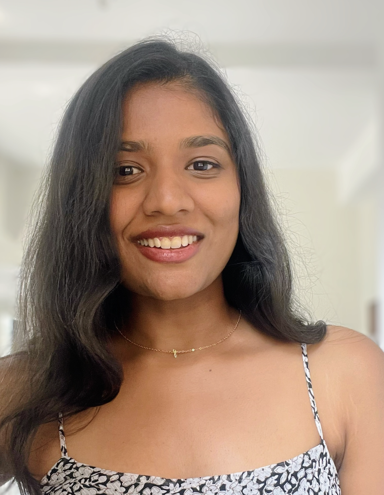
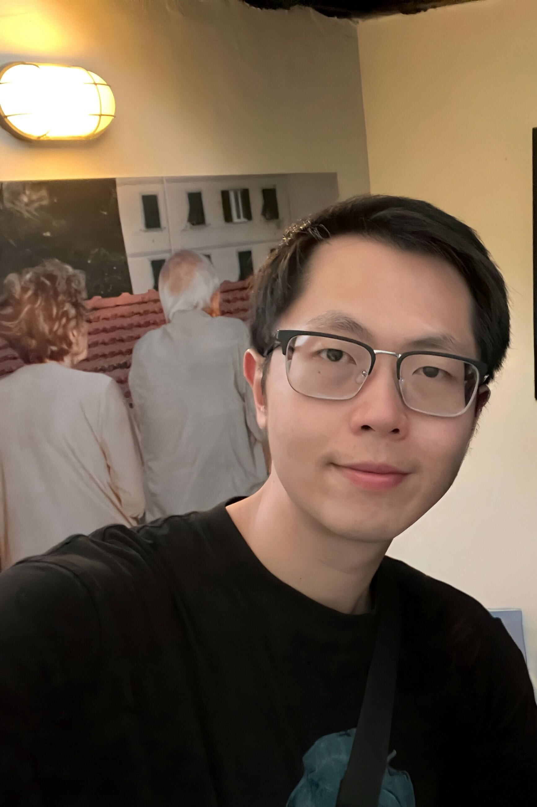

Nina Rouhani
Principal Investigator
Nina is an Assistant Professor in the Brain and Cognitive Science area (Department of Psychology & Neuroscience Graduate Program) at the University of Southern California.
She earned a joint PhD in Psychology and Neuroscience at Princeton University with a focus on the computational processes that govern learning, memory and decision-making. During her postdoctoral studies at Caltech, she tested how this framework scales up to predict behavior in social, interactive and real-world settings.
She completed a joint BA in History and Comparative Literature at Barnard College, and, relatedly, is an avid proponent of interdisciplinary work to help unravel and demystify (if possible) the profound complexities of the human experience.

Avisha
PhD Student
Avisha's research focuses on how people make decisions in social contexts, how they infer others' goals and intentions, and how these inferences structure memory for events.
She uses naturalistic stimuli, interactive tasks, and behavioral methods to study the cognitive processes underlying social perception and memory.

William Nickelson
PhD Student
William studies the cognitive neuroscience of value-based and economic decision-making.
He is interested in understanding the neural and cognitive processes involved in learning and assigning value, and how these mechanisms influence human decisions.

Eric (Zhipeng) Wang
PhD Student
Eric is interested in memory-guided decision-making, specifically how episodic memory systems interact with emotional responses and prediction mechanisms, and how these memories are later used to support social inference.

Sarita Raghunath
Lab Manager
Sarita is interested in how and why we remember certain events, and how events are remembered in time. She studies memory order and organization using real-world experiments.
Join the lab!
InCog lab is recruiting PhD students (starting Fall 2027).
If interested, e-mail Nina Rouhani (nrouhani@usc.edu) with your CV and a description of your research goals.